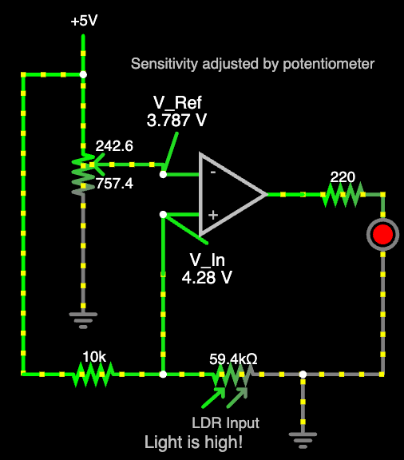
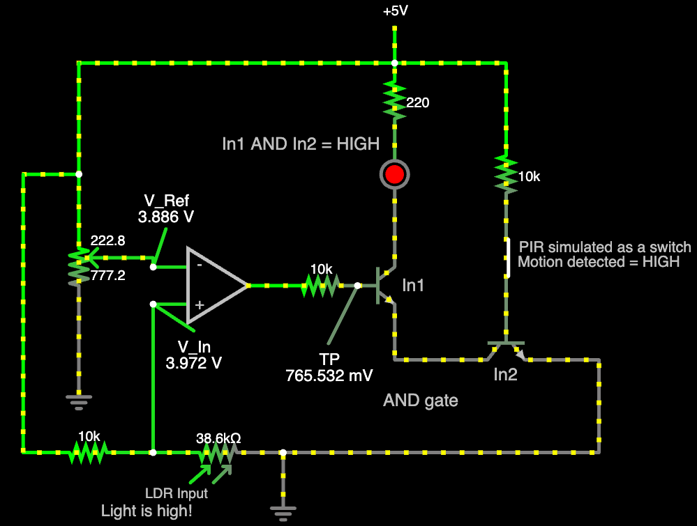
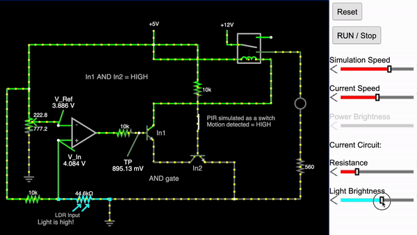

Automatic Lighting System
December 2023
Learning About Op-Amp Comparators
Before diving into the project, let's understand the core component: the op-amp comparator.
I have made this simple graphic to describe the way an op-amp comparator works.
In this project, I have used Texas Instruments' (TI) LM358P op-amp. The cool thing about this comparator is that it is a single power supply op-amp, where in my case, I the input was 5V.
This means in a "True" state, the op-amp outputs 5V, and in a "False" state, it outputs 0V.
Much easier to work with!
Project Overview
The automatic lighting system uses a comparator circuit to control a high-wattage lamp based on ambient light and motion detection. Here's a breakdown of the key components and their functions:
Components Used
- Power Supply: 5V for the control circuit
- TI LM358P Op-Amp: Chosen for its single power supply capability and low power consumption
- Light Dependent Resistor (LDR): Detects ambient light levels. Where when light source is high, resistance is low. This is useful to vary our voltage inputs through a voltage divider later
- Potentiometer: Allows for adjustable light sensitivity when set up in a voltage divider manner
- PIR Sensor: Detects motion in the area, outputs HIGH when motion is detected
- 2 NPN Transistors (2N2222): Used to create an AND gate logic between low light and motion detection
- Relay Module with Optocoupler: Allows the 3.3V control signal from the AND gate to switch the 12V needed for the high-wattage lamp
- Resistors: Various values for current limiting and voltage division
- Red LED: This is a personal favorite. Great for troubleshooting the circuit.
Circuit Design and Implementation
1. I set up the circuit to test the TI LM358P in a comparator setting where I will power a simple LED.

Then I implemented the circuit in real life as shown below.
 Now that we have adjusted the values (potentiometer sensitivity and LDR resistance), we can move on to the next step.
Now that we have adjusted the values (potentiometer sensitivity and LDR resistance), we can move on to the next step.
2. Now it is time to integrate the PIR sensor.
For our circuit to output high we want it to meet the following condition: (Light Comparator Circuit HIGH) AND (Motion is HIGH)
To implement this logic, I decided to create an AND gate using 2 NPN Transistors

3. Now that the logic works out, I took out the LED and wired the output to a relay. This relay takes in a 3 or 3.3V input and can output a 12V output through an optocoupler and relay.

4. Finally, I connected the relay to a high-wattage lamp and tested the circuit.
Prototyping and Testing
After simulating the circuit, I soldered the components. To house the project, I designed and 3D-printed a compact enclosure. This step was crucial for creating a presentable and functional prototype.
Conclusion
This project demonstrates the practical application of op-amp comparators in creating smart, energy-efficient lighting solutions. By integrating light sensing, motion detection, transistors, and relay control, we've created a system that automatically manages lighting based on environmental conditions.
I am currently working on creating a PCB for this project, and possibly adding a timing feature to the lamp control. Stay tuned for updates!